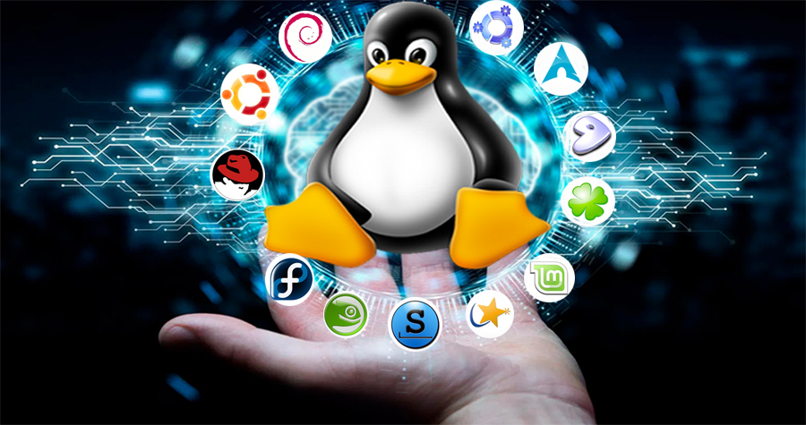
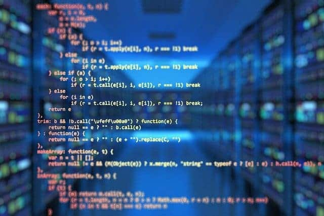
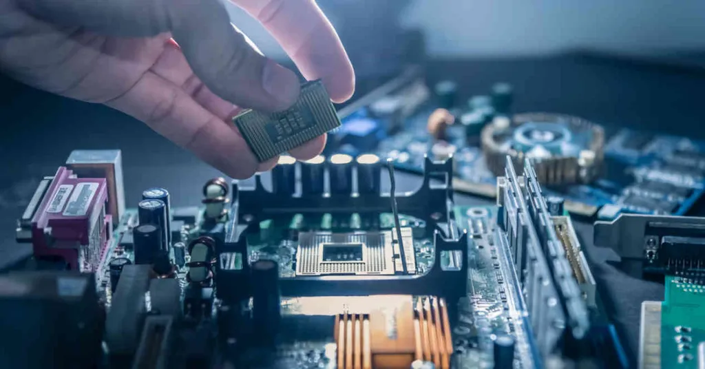
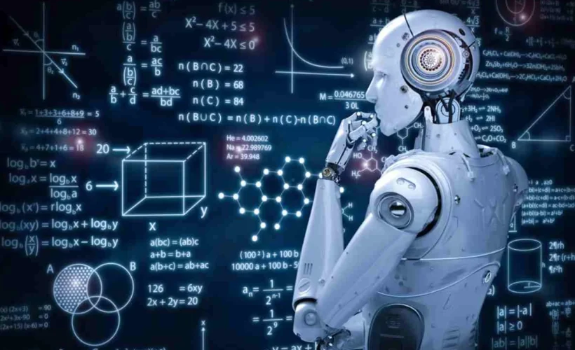

La historia de la informática no empieza con el primer ordenador personal ni con Internet.
Empieza mucho antes, con ideas matemáticas y máquinas mecánicas que intentaban automatizar el cálculo.
Lo que vino después, los transistores, los microprocesadores, las redes, la web, el cloud y la inteligencia artificial,
es la consecuencia de decisiones, inventos y descubrimientos que se acumularon durante un poco más de dos siglos.
A continuación podrás encontrar información sobre distintos campos de la informatica para entender mejor.
Sistemas Operativos

Los sistemas operativos (SO) son programas fundamentales que gestionan los recursos de hardware y software en una computadora. Actúan como intermediarios entre el usuario y el hardware,
Software

El software se define como un conjunto de instrucciones o programas que indican a una computadora cómo realizar tareas específicas. A diferencia del hardware, que se refiere a los componentes físicos de un sistema informático,
Hardware

El hardware básico de una computadora constituye la columna vertebral del rendimiento general del sistema, y entender sus componentes esenciales es fundamental para cualquier usuario. Entre estos componentes se encuentran la Unidad Central de Procesamiento (CPU), que actúa como el cerebro de la computador; la Memoria de Acceso Aleatorio (RAM), la cual actúa como memoria de trabajo temporal para la computadora; el Disco Duro, encargado del almacenamiento de datos; y la tarjeta gráfica, responsable de procesar imágenes y gráficos.
Internet

Las redes son sistemas que permiten la interconexión de múltiples dispositivos, facilitando la comunicación y el intercambio de información. A lo largo de la historia, han evolucionado diferentes tipos de redes, cada una diseñada para satisfacer necesidades específicas.
Las redes de área local (LAN) son uno de los tipos más comunes y se utilizan generalmente en espacios restringidos, como hogares y oficinas, permitiendo la conexión de computadoras, impresoras y otros dispositivos dentro de un área geográfica limitada.
Inteligencia Artificial (IA)

La inteligencia artificial es una rama de la ciencia informática que tiene como objetivo diseñar tecnología que emule la inteligencia humana. Esto significa que, mediante la creación de algoritmos y sistemas especializados, las máquinas pueden llevar a cabo procesos propios de la inteligencia humana, como aprender, razonar o autocorregirse. Gracias a los descubrimientos y avances tecnológicos, el concepto de inteligencia artificial ha adquirido un nuevo sentido, pasando a formar parte de la cotidianeidad de una gran parte de la población mundial.
Ciberseguridad

Con la accesibilidad de la información en línea, también aumentan los riesgos asociados a la navegación web. La seguridad en línea es un aspecto crucial que los usuarios deben tener en cuenta para proteger su información personal y evitar amenazas cibernéticas. Es fundamental utilizar contraseñas fuertes y únicas para cada cuenta y cambiar estas contraseñas de manera regular. Además, es aconsejable habilitar la autenticación en dos pasos, que proporciona otra capa de seguridad adicional a las cuentas en línea.